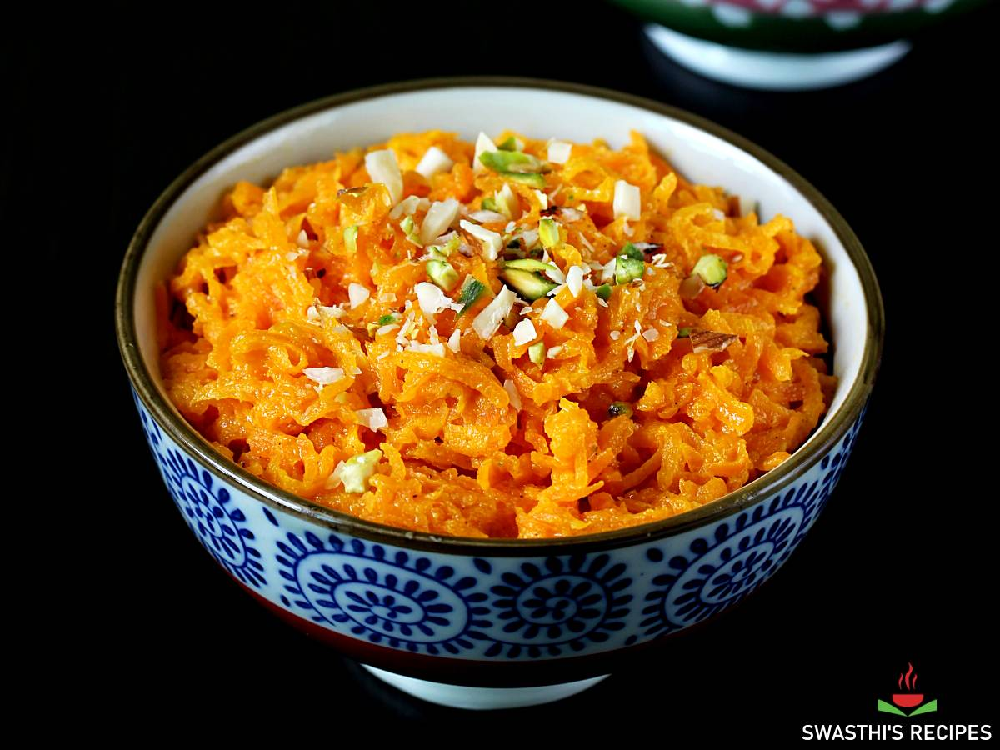

Gajar Ka Halwa

Description
Gajar Ka Halwa is a traditional Indian dessert made with grated carrots, milk, sugar, and ghee, flavored with cardamom and garnished with nuts.
Ingredients
- 500g grated carrots
- 1 liter full-fat milk
- 200g sugar
- 4 tablespoons ghee (clarified butter)
- 1/2 teaspoon cardamom powder
- Chopped nuts (cashews, almonds) for garnish
Steps
- Heat ghee in a heavy-bottomed pan over medium heat. Add the grated carrots and sauté for 5-7 minutes until they soften.
- Pour in the milk and bring it to a boil. Reduce the heat and let it simmer, stirring occasionally, until the milk is absorbed and the mixture thickens.
- Add sugar and cardamom powder, and continue to cook until the halwa reaches a thick consistency.
- Garnish with chopped nuts before serving. Serve warm or chilled.
Home